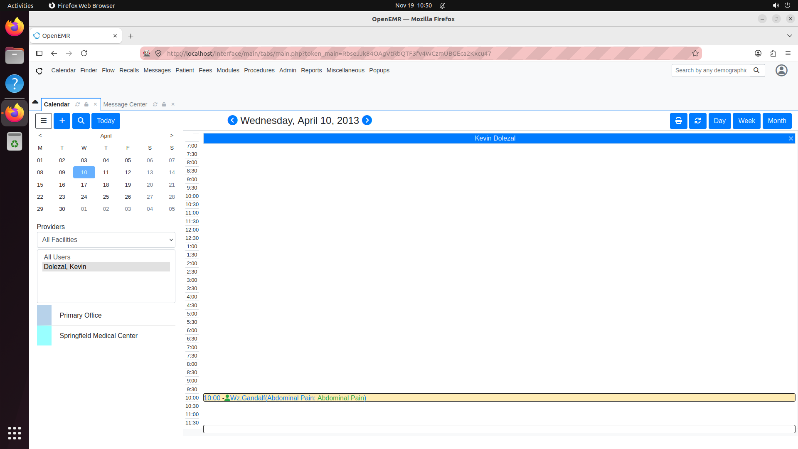

With guidance and rubrics
- Agent
- Pi agent
- Model
- gemini-3.8-flash
- Runtime (h:mm:ss)
- 0:25:54
- Total tokens
- 23,068,488

TASK 04 / 10
Complete encounter findings, assessment, and plan, then sign the note.
You are a clinician completing the encounter documentation for patient Gandalf Greyhame Wiz regarding his presentation of abdominal pain.
Update the clinical note for his encounter with the visit findings, assessment, and plan. Record gastrointestinal abdominal pain in the Review of Systems, and document right lower quadrant (RLQ) abdominal tenderness on the physical exam along with a comment on the abdominal exam noting possible appendicitis. In the assessment, summarize his presentation with abdominal pain and the impression of possible appendicitis. In the plan, order a CBC with differential and note possible appendicitis along with a consultation with Dr. Mayfield to determine whether an appendectomy is the appropriate course of action.
Once the documentation is complete, sign and lock the clinical note as the rendering provider.
Task instruction from the source collection. Formatting has been normalized for reading.
The expected outcomes for this task, with the source for each criterion.
| # | Outcome criterion | Source |
|---|---|---|
| 01 | The clinical note for Gandalf Greyhame Wiz documents abdominal pain in the gastrointestinal review of systems. | instruction.md |
| 02 | The abdominal examination in Gandalf Greyhame Wiz's clinical note records right lower quadrant tenderness and a comment noting possible appendicitis. | instruction.md |
| 03 | The clinical assessment for Gandalf Greyhame Wiz summarizes his presentation with abdominal pain and an impression of possible appendicitis. | instruction.md |
| 04 | The encounter plan for Gandalf Greyhame Wiz includes an order for a CBC with differential. | instruction.md |
| 05 | The clinical plan for Gandalf Greyhame Wiz documents possible appendicitis and a plan to consult Dr. Mayfield to determine whether an appendectomy is appropriate. | instruction.md |
| 06 | The clinical note for Gandalf Greyhame Wiz is signed by the rendering provider and locked. | instruction.md |
This task does not list any support materials.
Runtime covers Pi’s execution. Total tokens are input plus output, including cached input once. Trajectory downloads omit session credentials and redact authentication-related payloads.
